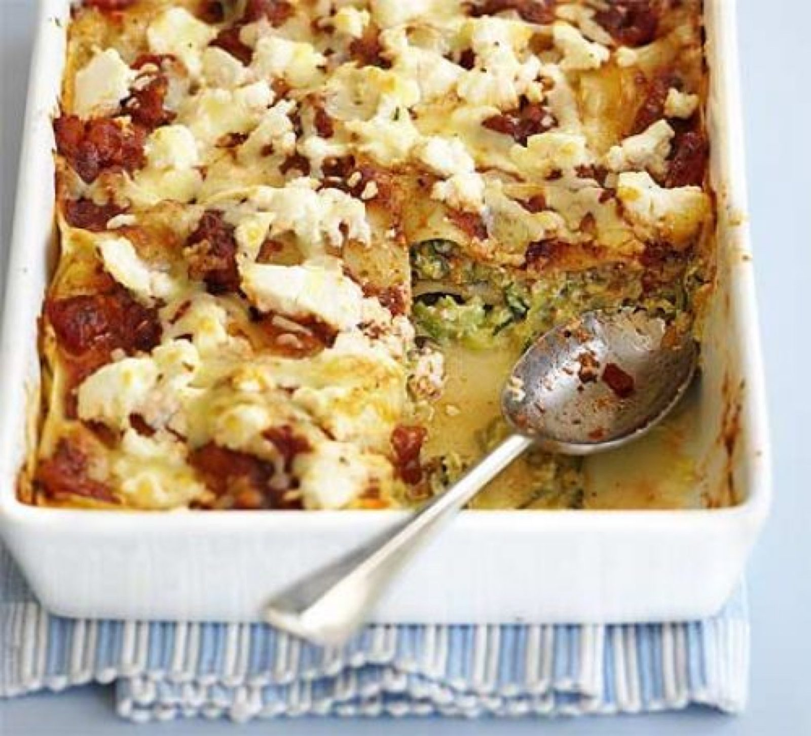

Creamy Courgette Lasagne

Before you start heat the oven to 220°C/fan 200°C/gas 7.
Ingredients
Method
- Heat oven to 220°C/fan 200°C/gas 7. Put a pan of water on to boil, then cook the 9 lasagne sheets for about 5 mins until softened, but not cooked through. Rinse in cold water, then drizzle with a little oil to stop them sticking together.
- Meanwhile, heat the 1 tbsp sunflower oil in a large frying pan, then fry the 1 onion. After 3 mins, add the 700g courgettes and 2 garlic cloves and continue to fry until the courgette has softened and turned bright green.
- Stir in 2/3 of both the 250g ricotta and the 50g cheddar, then season to taste.
- Heat the 350g tomato sauce in the microwave for 2 mins on High until hot.
- In a large baking dish, layer up the lasagne, starting with half the courgette mix, then pasta, then tomato sauce. Repeat, top with blobs of the remaining ricotta, then scatter with the rest of the cheddar. Bake on the top shelf for about 10 mins until the pasta is tender and the cheese is golden.